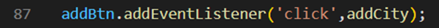
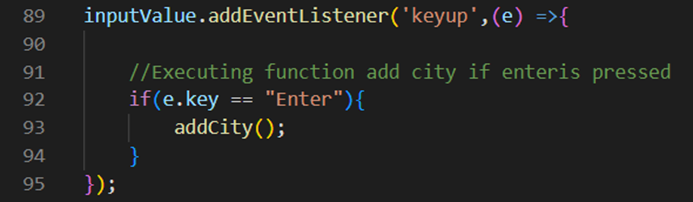

Purpose:
This application allows the user to access the current weather of any city in the world (using OpenWeather API).
Development Process:
User’s location:
For the browser to gain access to the user’s current location it needs the user’s permission. That’s why I decided to give it a separate event listener, as an attempt at multithreading. The user will be able to see the application right away without being asked for access to location if it’s not necessary.
Search Bar:
It is possible to add a city to display in the main field through the search bar.
- First way to do this is possible by typing the city/country user wants to see and press the plus button. 
- Second way is possible by typing the city and pressing “enter”. 
Add city function:
In this function one of the important things to mention is exception handling. It is inevitable that the user can mistype the name of the city or a country. Therefore, I checked for an 404 error, that the API link throws if the location that was given doesn’t exist.
Issues:
API key:
This project is open-source and does not have backend functionality. Therefore, the API key for this application is exposed in the developer tools and GitHub repository. Initially when I noticed this mistake, I tried to hide the API key using an external file “config.js” where I stored the sensitive information. Then I added that file to .gitignore. To create a .gitignore file I needed a “touch” command. Since I am a windows user, my computer didn’t have that command. I needed to use “npm” command to install “touch”. But since my computer didn’t have that command either, after some research I found a solution. By installing Node.js I also installed NPM and was able to complete my task. Unfortunately to be able to use this application on the web using this method I also need a proxy. I’m working on learning the necessary skills to build a secure program, but for now, the API is “hidden” in an external file, not in the main app.js file.
Future Changes:
- Display weather icon.
- Add more information about weather
- Add proxy